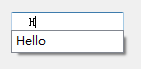

常用控件
QPushButton、QLabel
编辑控件
Line Edit:行编辑
QString str = ui->lineEdit->text();//获取内容
qDebug()<<str;
ui->lineEdit->setText("1234567");//设置内容
ui->lineEdit->setTextMargins(15,0,0,0);//设置内容显示方式
ui->lineEdit->setEchoMode(QLineEdit::Password); //设置内容显示方式
#include <QCompleter> //设置自动补全
#include <QStringList>
QStringList list;
list<<"Hello"<<"world"<<"C++";
QCompleter *com = new QCompleter(list,this);
com->setCaseSensitivity(Qt::CaseInsensitive); //设置为不区分大小写
ui->lineEdit->setCompleter(com);

Text Edit（用法与Line Edit相似）
Text Edit
Plain Text Edit：只能显示文字
Spin Box
Spin Box：调节整型数字
Double Spin Box：调节Double类型
调节时间


显示控件
Label
可以显示动画、图片、文字、链接
ui->labelText->setText("^_^");
ui->labelImage->setPixmap(QPixmap("://a/b.png"));
ui->labelImage->setScaledContents(true);
#include <QMovie> //动画
//创建动画
QMovie *myMovie = new QMovie("://a/c.gif");
//设置动画
ui->labelGif->setMovie(myMovie);
//启动动画
myMovie->start();
//自动适应大小
ui->labelGif->setScaledContents(true);
//设置html
ui->labelUrl->setText("<h1><a href=\"https://www.baidu.com\">百度一下</a></h1>")
ui->labelUrl->setOpenExternalLinks(true); 点击可以打开链接
LCD Number（数码管）
ui->lcdNumber->display(123); //设置内容

Progress Bar（进度条）
ui->progressBar->setMinimum(0);
ui->progressBar->setMaximum(200);
ui->progressBar->setValue(100);